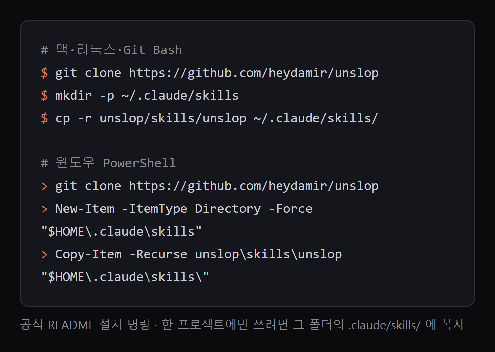
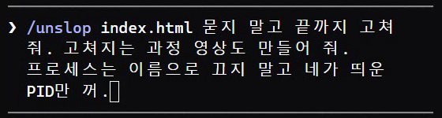
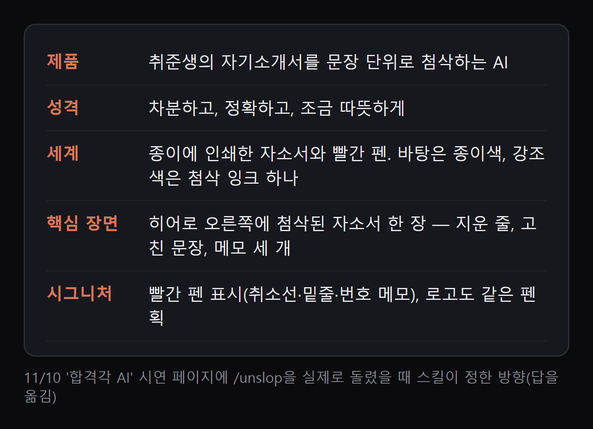
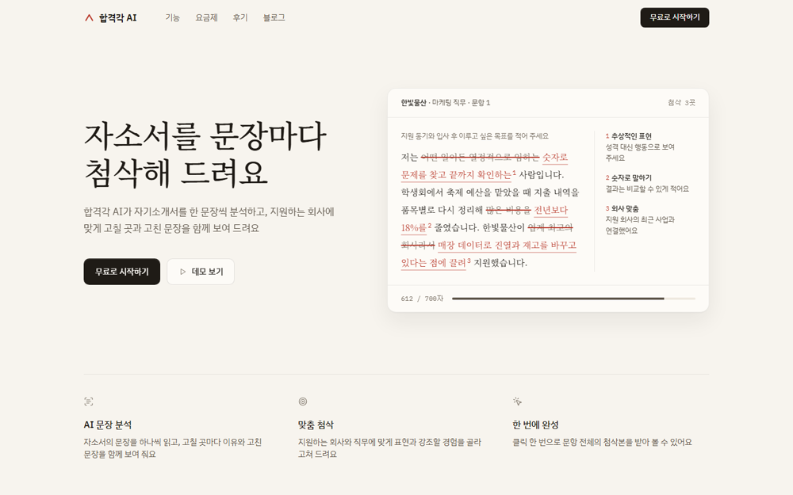

보라 그라데이션·이모지·'!!'처럼 AI가 만든 티가 나는 곳을 먼저 찾고, 그 제품에 맞는 방향을 정한 뒤 여백·색·아이콘·문구·글씨·배치·세부·그림·움직임 순서로 고쳐요. 고쳐지는 과정을 짧은 영상으로도 뽑아 줘요. 아래 예시는 시연용으로 만든 가짜 서비스 페이지에 저희가 실제로 한 번 돌린 결과예요.
아래 '복사해서 쓰기'의 설치 줄을 내 운영체제에 맞게 넣어요. 모든 프로젝트에서 쓰려면 ~/.claude/skills, 한 프로젝트만이면 그 폴더 안 .claude/skills 에 복사해요. 끝나면 클로드 코드를 새로 여세요.

클로드 코드 입력칸에 /unslop 뒤에 고칠 파일이나 화면을 적어요. 저희는 '/unslop index.html 묻지 말고 끝까지 고쳐 줘. 고쳐지는 과정 영상도 만들어 줘.'라고 넣었어요. 링크만 있는 사이트는 저장해서 고친 코드로 돌려줘요(실제 사이트를 바꾸진 않아요).

고치기 전에 제품·성격·세계·핵심 장면·시그니처를 정해서 보여 줘요. 마음에 안 들면 이때 '더 밝게', '우리 로고 색 유지'처럼 말해 방향을 바꾸세요. '묻지 말고'를 빼면 여기서 멈추고 물어봐요.

원본은 index.original.html 로 남기고 index.html 을 고쳐요. 이번엔 보라 바탕·번진 빛·유리 카드·이모지를 다 걷어 내고, 종이색 바탕에 빨간 첨삭 잉크 한 색으로 바꿨어요. 확인할 수 없는 '합격률 10배', '10,000명+ 선택' 문구는 스스로 지우고 마지막에 '근거가 있으면 다시 넣으라'고 알려 줬어요.

요청에 '과정 영상도 만들어 줘'를 붙이면 unslop-story.mp4 를 만들어요(정사각, 10초 안팎). 빨간 치수선이 나오고 값이 제자리에서 바뀌어요. 영상 안에 'unslop by @heydamir' 표기가 들어가요. 처음이면 프로젝트 폴더에서 npm install -D playwright 와 npx playwright install chromium 을 먼저 하고, ffmpeg 도 깔아 두세요.
결과가 마음에 안 들면 '방향을 ○○ 쪽으로 다시', '여백만 더 넓게'처럼 이어서 말하면 돼요. 이미 괜찮은 화면은 갈아엎지 않고 작은 손질만 제안해요.
터미널, 받을 폴더에서
git clone https://github.com/heydamir/unslop
1번 다음
mkdir -p ~/.claude/skills && cp -r unslop/skills/unslop ~/.claude/skills/
1번 다음
New-Item -ItemType Directory -Force "$HOME\.claude\skills"; Copy-Item -Recurse unslop\skills\unslop "$HOME\.claude\skills\"
클로드 코드 입력칸
/unslop index.html
바로 올릴 영상까지
/unslop index.html 고쳐지는 과정 영상도 만들어 줘
사이트 주소가 있을 때
/unslop the hero of https://내사이트주소
영상이 처음일 때, 프로젝트 폴더 터미널
npm install -D playwright && npx playwright install chromium
도움이 되셨다면
@ai.antenna.kr
에서 바로 쓰는 AI 활용법을 계속 올립니다.